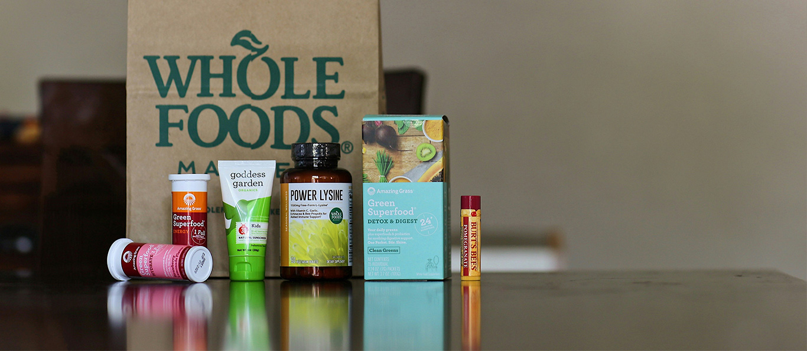
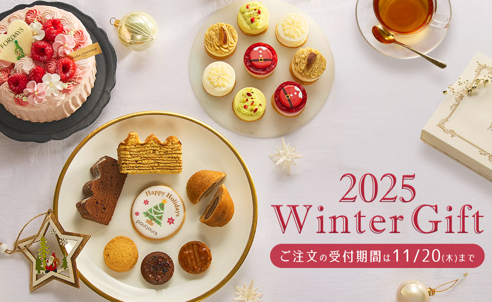
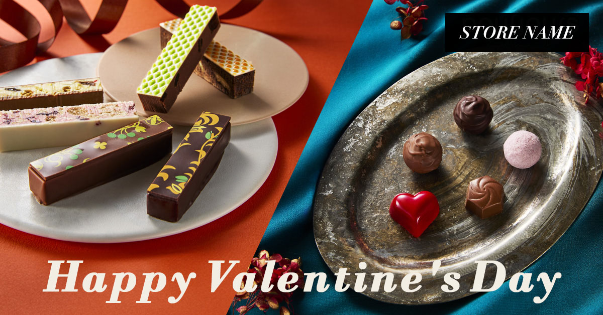
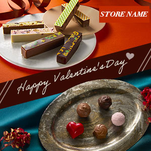
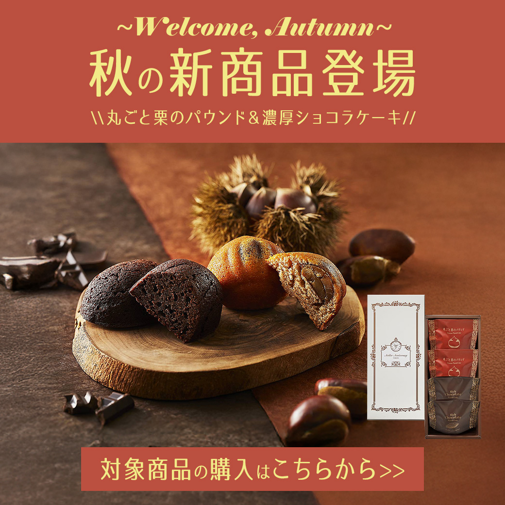
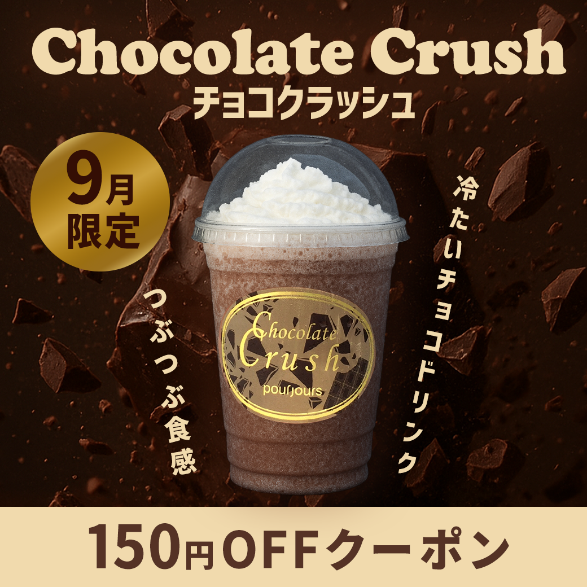

会員向け健康食品会社のマーケティング部にて、派遣スタッフとして 企業サイトおよびECサイトの更新業務、バナー制作を担当しました。 日常的な更新作業に加え、キャンペーン施策に伴うクリエイティブ制作にも携わっています。
担当業務
・企業サイトおよび関連ページの更新
・ECサイトの商品ページ登録、修正
・系列洋菓子店ECサイトの更新、商品登録
・トップページ用バナー画像の作成
・LINEクーポン用バナー画像の定期作成
・リスティング広告用バナー制作（季節キャンペーン）
・メルマガ配信（HTML / テキスト）
業務で意識していたこと
既存サイトのトンマナや運用ルールを優先し、
更新しやすさと視認性のバランスを意識して対応しました。
バナー制作においては、スマートフォンでの見え方を重視し、
情報を詰め込みすぎない構成を心がけています。
使用ツール・CMS
Photoshop / Illustrator / HTML / CSS
WordPress / Movable Type / ec-force / EC-CUBE
制作バナー（一部抜粋）
ECサイト用バナー（トップページ・商品訴求）

キャンペーン・リスティング広告用バナー


LINE配信用バナー

LINEクーポン用バナー

※ 実務で制作したバナーのため、内容・デザインは一部調整しています。